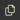

ICRA 2023 Humanoid Robot Wrestling Competition
This competition focuses on the development of advanced humanoid robot control software for a wrestling game. It relies on a calibrated simulation model of the NAO robot, running in the Webots simulator with realistic physics, sensor and actuator simulation.
To edit the source code: click on the source code editor icon .
In the window that was just opened, click on the Explorer icon .
Under the WEBOTS-PROJECT tab, open the "participant" folder.
Finally, you can access the controller code in the participant.py file.
A game lasts until one of these two conditions occurs:
- Knock-out: If the altitude (along Z axis) of the center of mass of one robot remains below a given threshold for more than 10 seconds, then the other robot is declared the winner and the game is immediately over. This may happen if a robot falls down and cannot recover quickly or if it falls off the ring.
- Time-out: If no knock-out happened after 3 minutes, the robot having the greater ring coverage is declared the winner and the game is over. In the unlikely case of coverage equality, the winner is determined randomly.
coverage = X_max + Y_max - X_min - Y_min
We provide a utils library that contains useful classes to control the robot:
- Accelerometer: This class provides access to the accelerometer data with a running average to filter the values.
- Camera: This class can retrieve OpenCV compatible images from the camera and send images to the robot window.
- CurrentMotionManager: This class manages which motion file is currently playing.
- EllipsoidGaitGenerator: This class generates an ellipsoid path for the feet.
- FallDetection: This class detects if the robot has fallen down and plays the correct routine to get back up.
- FiniteStateMachine: This class implements a simple finite state machine.
- GaitManager: This high level class calls EllipsoidGaitGenerator and Kinematics together to make the robot walk. It has the function command_to_motors(desired_radius, heading_angle) to easily control the robot.
- ImageProcessing: This class provides access to image processing functions. It has the function locate_opponent(img) which is a crude example of opponent localisation.
- Kinematics: This class provides access to kinematics functions, notably the inverse kinematics computation for the legs.
- MotionLibrary: This class load all the motion files inside the motions folder and provides an easy way of playing them.
- PoseEstimator: This class estimates the robot pose with a range of different algorithms provided by the ahrs Python module.
- RunningAverage: This class provides a running average for a desired history length which can be used for vectors.